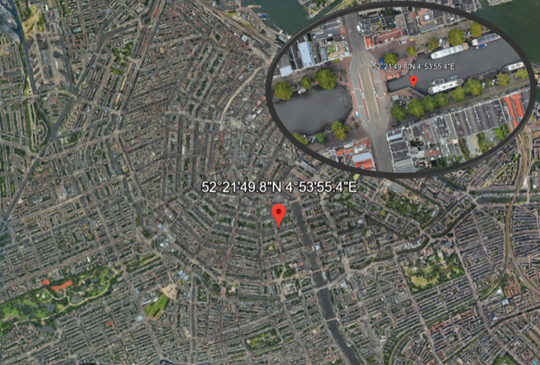

Assignment 4 - Transport
The route from the first assignment is shown below. This data is used to make a GeoJSON file for this excersice.

1. Find the centre of the nodes of the swimming route and find a suitable spot for the Event Headquarters.
At first the geojson file (link) was made to calculate the centerpoint of our route using the code below.
import geopandas as gpd
# Read the file made on the internet
line_data = gpd.read_file('C:/Users/tygoh/Downloads/map.geojson')
# Calculate the middle of the line and coordinates
midpoint = line_data.geometry.interpolate(0.5, normalized=True)
print(midpoint)point = (4.89871 52.36383)
The centerpoint is the tram stop of Keizersgracht. At this place, as shown on the figure below, there is a lot of open space nearby the tram stop. This is a perfect spot for the Event Headquarters, where tents can be placed.
2. Find the closest bus and tram stops at the start and finish of the swimming route. How many people can be transported within an hour.
Using Google Maps to search for the closet tram and bus stops. This resulted to the outcome of the closest bus and tram stop at the finish being Nieuwezijds Kolk (tram 2, 12, 13, 17). The busstop is only used at night, which means that the closest busstop is central station. The amount of trams is 32 each hour to central station according to Google Maps. Each tram has place for 175 persons (GVB, 2023).
amount_of_people = 32 * 175
print(amount_of_people)
The amount of people that the trams can transport is 5600 per hour to central station.
The closets busstop from central station is Buiten Brouwerstraat (bus 18, 21, 22), 20 busses from central station come by according to Google Maps. Every articulated bus can transport a maximum of 150 persons (GVB, 2022).
amount_of_people = 20 * 150
print(amount_of_people)
The amount of people that the busses can transport is 3000 per hour from central station.
The closet tramstop to the start is central station (tram 2, 4, 12, 13, 14, 17, 24, 26). The amount of people that can travel from here is an enormous amount.
3. Find all cafes, restaurants near the finish line. Walking time smaller than 10 minutes
10 minutes walking radius are approx. 850m (0,53miles) in every direction (Factista.com, n.d.) Based on Open Street Map in this radius around our end point of the swimming route (Van Mierlobrug) we wrote a python code that counts the cafes, bars and restaurants in the 850 m radius, prints all their names and plots them on a map.
# we need the requests library to get the data from OSM and the folium library to plot the map
import requests
import folium
# We define the query to search for cafes, bars and restaurants with Overpass API
overpass_url = "https://overpass-api.de/api/interpreter"
# we define the radius in meter and the coordinates of Van Mierlobrug (end point of the swimming route)
overpass_query = """
[out:json];
(
node(around:850, 52.37683, 4.88984);
way(around:850, 52.37683, 4.88984);
rel(around:850, 52.37683, 4.88984);
);
out center;
"""
# We send the query to the Overpass API to get the data
response = requests.get(overpass_url, params={"data": overpass_query})
if response.status_code == 200:
data = response.json()
# We set 0 as the start value for counting
cafe_count = 0
bar_count = 0
restaurant_count = 0
# We open 3 lists to store the cafe, bar and restaurant names
cafe_names = []
bar_names = []
restaurant_names = []
# We create a map of the coordinates to plot the results and markers for the map
m = folium.Map(location=[52.37683, 4.88984], zoom_start=15)
cafe_markers = folium.FeatureGroup(name='Cafes')
restaurant_markers = folium.FeatureGroup(name='Restaurants')
bar_markers = folium.FeatureGroup (name='bar')
# We iterate through the elements, count all cafes, bars, and restaurants, add the to the map and add their names to the 3 lists
for element in data['elements']:
if 'tags' in element:
tags = element['tags']
if 'name' in tags:
name = tags['name']
if 'amenity' in tags:
amenity = tags['amenity']
if amenity == 'cafe':
cafe_count += 1
cafe_names.append(name)
location = (element.get('lat'), element.get('lon'))
popup = tags.get('name', 'Cafe')
icon_color = 'blue'
if None not in location:
cafe_markers.add_child(folium.Marker(
location=location,
popup=popup,
icon=folium.Icon(color=icon_color)
))
elif amenity == 'bar':
bar_count += 1
bar_names.append(name)
location = (element.get('lat'), element.get('lon'))
popup = tags.get('name', 'Bar')
icon_color = 'green'
if None not in location:
bar_markers.add_child(folium.Marker(
location=location,
popup=popup,
icon=folium.Icon(color=icon_color)
))
elif amenity == 'restaurant':
restaurant_count += 1
restaurant_names.append(name)
location = (element.get('lat'), element.get('lon'))
popup = tags.get('name', 'Restaurant')
icon_color = 'orange'
if None not in location:
restaurant_markers.add_child(folium.Marker(
location=location,
popup=popup,
icon=folium.Icon(color=icon_color)
))
# we print the numbers of cafes, bars, and restaurants in the 850m radius
print(f"Number of cafes: {cafe_count}")
print(f"Number of bars: {bar_count}")
print(f"Number of restaurants: {restaurant_count}")
# we want to have a list of all names of those cafes, bars and restaurants (remove if you don`t want too much information)
print("Cafes:")
for name in cafe_names:
print(name)
print("\nBars:")
for name in bar_names:
print(name)
print("\nRestaurants:")
for name in restaurant_names:
print(name)
# we add the markers to the map
m.add_child(cafe_markers)
m.add_child(bar_markers)
m.add_child(restaurant_markers)
# we add a layer control for themarkers
folium.LayerControl().add_to(m)
# we plot the map in Jupyter Lab
m
This we find:
- Number of bars: 70
- Number of restaurants: 357
- Number of cafes: 137
- Blue markers = Cafés
- Green markers = Bars
- Orange markers = Restaurants
References
Factista.com (n.d). How far can you walk in 10 minutes? https://factista.com/en/how-far-can-you-walk-in-10-minutes [16.10.2023]
GVB. (2023, 4 mei). Onze trams - over GVB. Over GVB. https://over.gvb.nl/ov-in-amsterdam/voer-en-vaartuigen/tram-in-cijfers/[16.10.2023]
GVB. (2022, 13 juni). Onze bussen - over GVB. Over GVB. https://over.gvb.nl/ov-in-amsterdam/voer-en-vaartuigen/bus-in-cijfers/[16.10.2023]